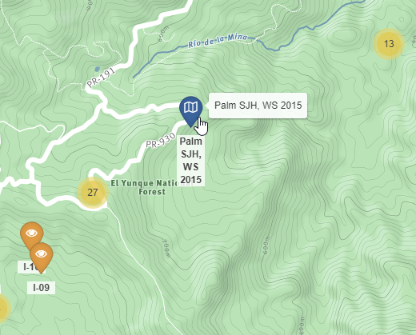
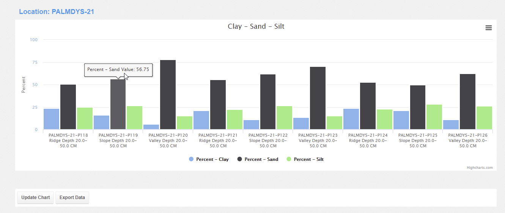

ODM2 Admin Managing Profile Results¶
Some of the sampling features, accessible from the ODM2 Admin Demo Map contain sampling features such as

Field area Palm SJH, WS 2015 represents a set of soil pits making up a study area. Soils taken from this study area were analyzed for Acid phosphatase, Ammonium oxalate extractable aluminum and other compounds. A graph of these values can be viewed here: http://odm2admin.cuahsi.org/Sandbox/profilegraph/selectedrelatedfeature=15/popup=true/ Follow these steps:
# Select Variable Codes: Clay, Sand, and Silt # Click ‘Update Chart’ wait for the page to refresh # click ‘Export Data’.

We can export the data from this page then we get the below, the method here has been shortend for space.
databaseid |
depth |
sampling feature/location |
sampling feature uri |
method |
citation |
|
|---|---|---|---|---|---|---|
6196 |
0.0-10.0 CM- Centimeter |
|
|
13.40865635 |
||
6198 |
10.0-20.0 CM- Centimeter |
|
|
14.3594963551 |
||
6200 |
0.0-10.0 CM- Centimeter |
|
|
12.8595966657 |
‘Sand -unit-Percent-processing level-L1 passed QAQC -L1 passed QAQC’ |
‘Silt -unit-Percent-processing level-L1 passed QAQC - L1 passed QAQC’ |
|---|---|
19.43426367 |
44.45807837 |
9.447758926 |
55.08999424 |
2.758360072 |
48.96050472 |
The export contains a database id record for the profile result value, the depth which is the difference between the current profile result value’s intended depth and the previous profile result value intended depth where the profile results have the same sampling feature.
Let’s look at another data export for samplingfeature PALMDYS-21, If we go to the following link:
http://odm2admin.cuahsi.org/Sandbox/profilegraph/selectedrelatedfeature=674/popup=true/
PALMDYS-21 is a field area where 9 soil pits were dug. Again let’s Select Variable Codes: Clay, Sand, and Silt, Click ‘Update Chart’ wait for the page to refresh and click ‘Export Data’.

This export also contains sampling feature URIs, in this case these are International Geo Sample Numbers (IGSN) issued by the Interdisciplinary Earth Data Alliance (IEDA) http://www.geosamples.org/
‘sampling feature/location’ |
‘sampling feature uri’ |
|---|---|
‘PALMDYS-21-P118 Ridge’ |
|
‘PALMDYS-21-P119 Slope’ |
|
‘PALMDYS-21-P120 Valley’ |
|
‘PALMDYS-21-P121 Ridge’ |
|
‘PALMDYS-21-P122 Slope’ |
|
‘PALMDYS-21-P123 Valley’ |
|
‘PALMDYS-21-P124 Ridge’ |
|
‘PALMDYS-21-P125 Slope’ |
|
‘PALMDYS-21-P126 Valley’ |